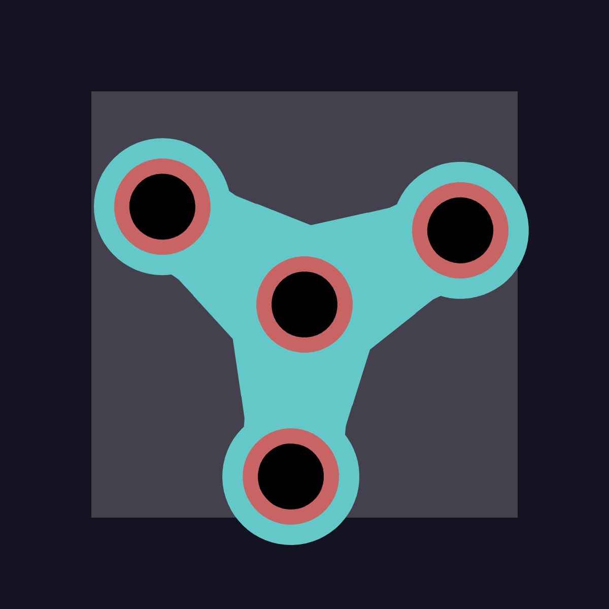
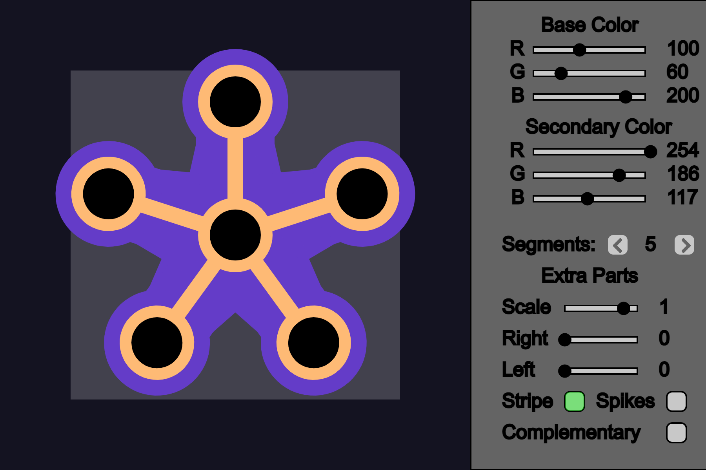
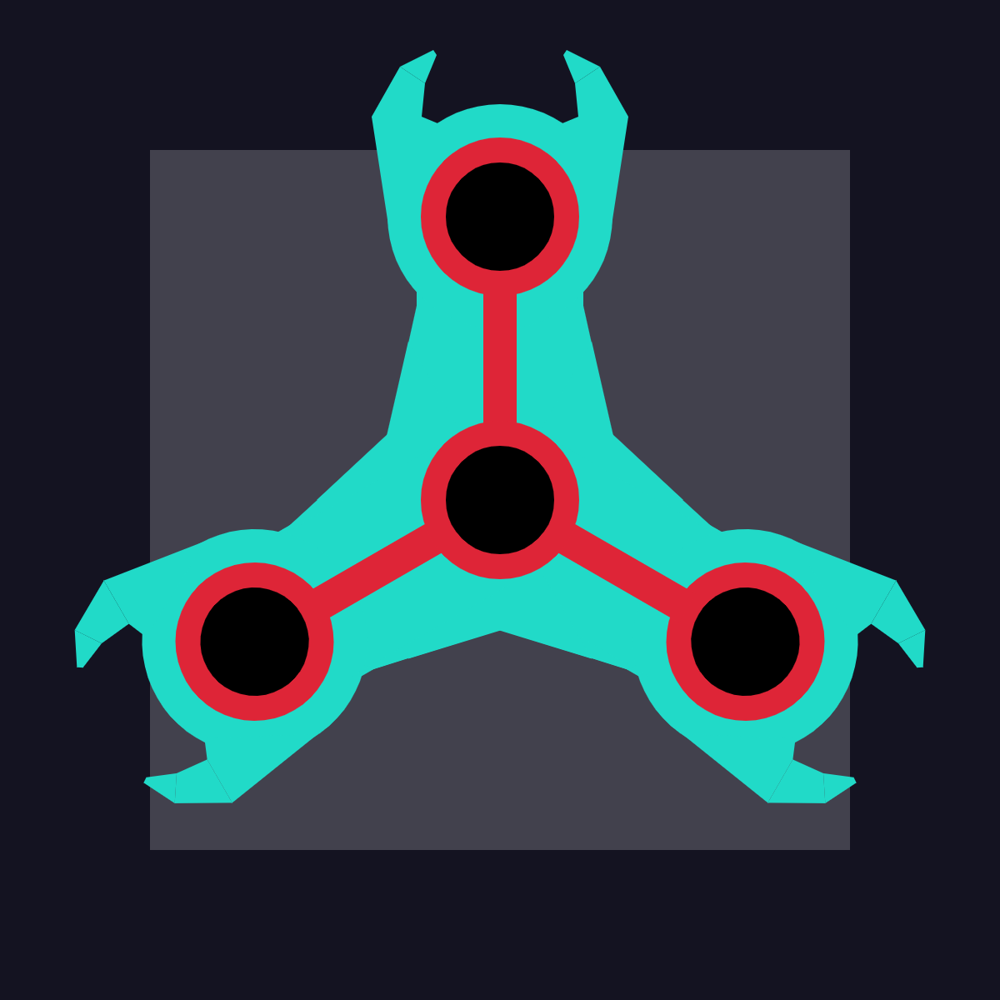
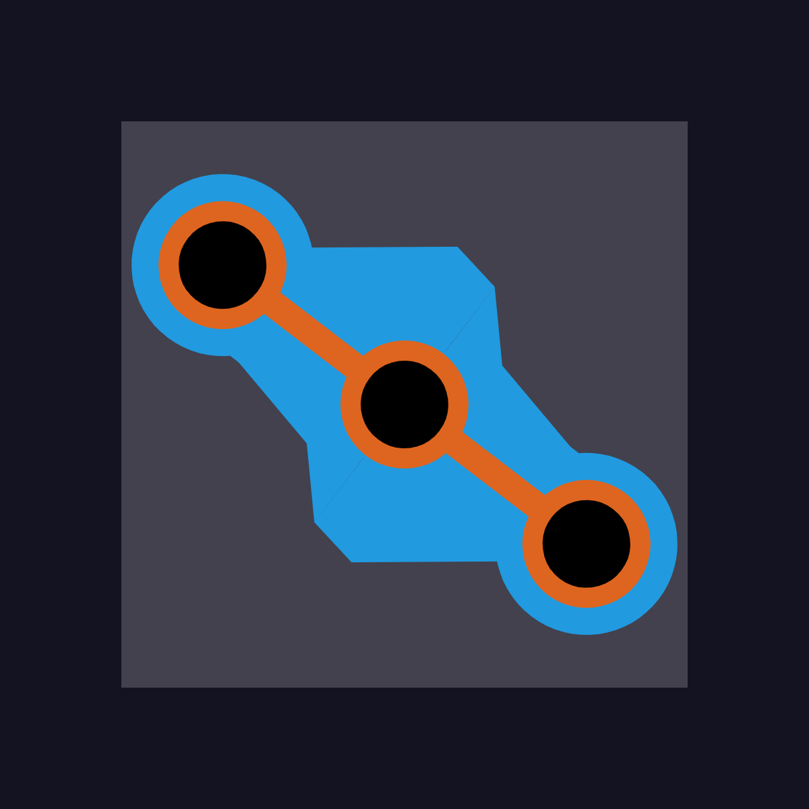

Created: 9/27/23
Tags:
The main Idea for this project was to learn new function commands like rotate(), transform(), push(), and pop(). Once I heard rotate I thought about a fidget spinner. I ended up creating this as a side project and did not turn in for the actual assignment.
I mainly wanted to make it so you could create and customize your own fidget spinner and made it so you could hide and show the editor. I did this so you could take a screen shot of the fidget spinner or just hide the clutter while you were spinning. The main things you could change were colors, segment amount, size, and also some cosmetic designs which could be toggled.
For the editor, I copied code from the Painter Script for things like buttons and sliders. I wanted to add more customizations, but the class was moving on and I hade to keep up. So I considered it complete and still come back from time to time, to spin it and get mesmorized by the spinner.
 